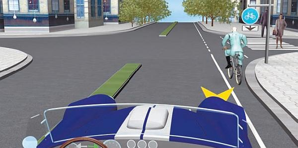
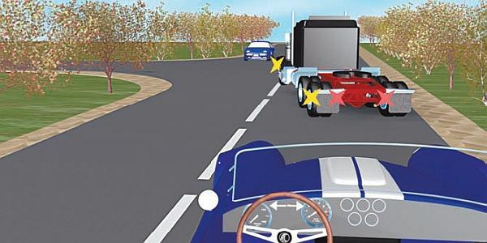
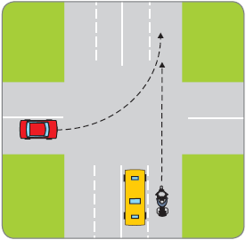

Анализ дорожно-транспортной ситуации.
Находясь за рулем автомобиля на оживленной дороге, водитель постоянно встречается с большим количеством тех или иных объектов, событий, препятствий. Однако далеко не все из того, что попадает в поле его зрения, имеет сколько-нибудь важное значение с точки зрения безопасности. Поэтому каждый водитель из всего обилия получаемой информации должен быстро выделять то, что является наиболее важным. Например, расположенный возле дороги рекламный щит не имеет для водителя никакой информационной ценности, а вот имеющийся под этим щитом дорожный знак будет содержать важную информацию.
ВНИМАНИЕ
Если водитель не умеет выделять и анализировать самое важное, ему придется тратить неоправданно много времени на обработку всей информации, преимущественная часть которой может оказаться совершенно бесполезной.
Наибольшую важность представляет для водителя информация о тех объектах, которые в той или иной мере могут оказать влияние на направление движения автомобиля, его скорость либо спровоцировать возникновение критической дорожной ситуации или дорожно-транспортного происшествия. В общем случае все встречающиеся на пути объекты можно классифицировать на три вида.
> Объекты, которые представляют угрозу для безопасности движения транспортного средства. Эти объекты, в свою очередь, можно также разделить на три категории: неподвижные (припаркованные автомобили, придорожные деревья, столбы и т. п.), подвижные (транспортные средства, пешеходы, велосипедисты) и объекты, ограничивающие зону видимости (придорожные здания, сооружения, особенности рельефа местности, придорожные зеленые насаждения и т. п.).
> Объекты, носящие информационный характер. Таковыми являются светофоры, регулировщики, знаки дорожного движения, линии разметки, прочие технические средства организации дорожного движения.
> Объекты, которые не представляют угрозы для безопасности движения транспортного средства. Среди таких объектов можно отметить придорожные рекламные щиты, находящихся на тротуаре пешеходов, движущихся по велосипедной дорожке велосипедистов (рис. 6.10) и т. д.

Рис. 6.10. Пример дисциплинированности велосипедиста
Характерной особенностью любой дорожной ситуации является то, что она находится в постоянной динамике, что требует от водителей транспортных средств быстро и помногу анализировать информацию. При этом важно уметь группировать сходную и однотипную информацию, это позволит намного сократить время, необходимое для ее обработки. Например, сигналы светофора в комплексе с дорожными знаками и линиями разметки регламентируют порядок дорожного движения на отдельно взятом участке проезжей части. Они информируют водителя об очередности проезда перекрестков, наличии впереди поворотов, пешеходных переходов и т. п. Поэтому полученные от них сведения необходимо воспринять и проанализировать в первую очередь.
Все автомобили имеют различные технические характеристики (разные набор скорости, мощность двигателя, маневренность, состояние тормозной системы и т. д.). Индивидуален и каждый человек, управляющий автомобилем: все мы имеем собственные характерные особенности, специфику поведения, по-своему реагируем на раздражители. Находясь за рулем, это необходимо постоянно учитывать и уметь своевременно обнаруживать признаки, на основании которых можно делать вывод о вероятном дальнейшем направлении движения автомобилей и о том, как поступят их водители в тот или иной момент. Основные такие признаки перечислены ниже.
> О предстоящем изменении траектории движения транспортного средства можно узнать по включившемуся указателю поворота, расположению автомобиля на проезжей части (например, если он занял крайнее левое положение, вероятно, будет поворачивать налево либо разворачиваться), положению его передних колес, наклону кузова, распределению груза (рис. 6.11).

Рис. 6.11. Выезжать на встречную полосу нельзя: нужно подождать, пока грузовик повернет налево
> О предстоящем увеличении скорости может свидетельствовать увеличение выходящих из трубы выхлопных газов, а также небольшой подъем передней части автомобиля либо оседание его задней части.
> О предстоящем снижении скорости может свидетельствовать включение задних стоп-сигналов (они у любого автомобиля загораются автоматически даже при легком нажатии педали тормоза), небольшой подъем задней части автомобиля либо наклон его передней части, а также характерный скрип тормозных колодок, наблюдающийся у многих автомобилей.
> О техническом состоянии автомобиля можно узнать по наличию на нем внешних повреждений, цвету выхлопных газов (например, ярко-голубой или синий цвет свидетельствует о серьезных неполадках в двигателе), звукам со стороны подвески, характерному скрежету при переключении передач (это свидетельствует о неисправностях в коробке передач), распределению груза.
Множество дорожно-транспортных происшествий случается по причине того, что один водитель не заметил другого, а другой, будучи уверенным в том, что его видят, и не подозревал об опасности, поэтому не предпринял никаких действий для избежания ДТП. Следовательно, очень важно знать, видимы ли вы для других участников дорожного движения (рис. 6.12).

Рис. 6.12. Опасная ситуация: водитель легковой машины и мотоциклист не видят друг друга
Определить это можно по целому ряду характерных признаков. Например, если водитель движущегося неподалеку транспортного средства прикуривает либо разговаривает по мобильному телефону (пусть даже с помощью системы, обеспечивающей свободу рук), возможно, что он сильно отвлечен и не видит вас. То же самое касается водителей, которые увлеченно беседуют со своими пассажирами. Часто невнимательностью грешат очень молодые водители, а также водители преклонного возраста.
Проблемы с видимостью могут возникать у тех водителей, в машине которых сильно тонированы или просто загрязнены стекла, а также отсутствуют боковые зеркала заднего вида. Помните, что ваш автомобиль для водителя другого транспортного средства может оказаться в «мертвой зоне».
Сильно ограничивают обзор водителям также ярко светящее в глаза солнце, различного рода игрушки, наклейки и фенечки, которые могут висеть на лобовом или заднем стекле, не работающие в ненастную погоду «дворники», большое количество перевозимого груза в салоне автомобиля.
Всегда самых непредсказуемых действий можно ожидать от пешеходов и велосипедистов.